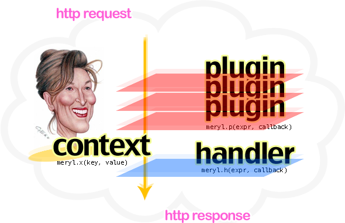

About
Meryl is a minimalistic web framework for nodejs platform which is very simple to use, fun to play and easy to modify. Despite the small size of its code base, it has plenty of promising features. Some of the feature highlights are:
- Small sized, easy to modify code base.
- Url routing with an easy expression syntax.
- Powerful middleware infrastructure based on a plugin system.
- Extension mechanism which allows user to extend handler and plugin contexts.
- Built-in static file handler plugin and micro templating extension.

Meryl has more! Come around and play with and help it to improve more. But please note that the project is very very young and no serious tests done while it is under heavy development. So for now, use Meryl with caution until it becomes mature with a stable release.Install
Use npm for painless, quicky experience.
$ npm install meryl
If you don't have npm, you can simply put meryl in your '$HOME/.node_libraries' directory.
$ cd $HOME/.node_libraries $ git clone http://github/com/coffeemate/meryl.git
Yep, it's ready already. Now you can use it in your applications by typing:
var meryl = require('meryl');Quick Start
If you installed Meryl sucessfully, now you are ready to get your feet wet. Create a file named 'app.js' with the copy of contents below.
// app.js
// import meryl
var meryl = require('meryl');
// Now define a request handler tied to an url expression.
meryl.h('GET /{yourname}?', function () {
this.send('Hello, ' + this.params.yourname || 'World');
});
// OK, here we go. Let's plug meryl into your http server instance.
require('http').createServer(meryl.cgi()).listen(3000);Ok, let's run it.
$ node app.js
If you got no exception, you are the lucky one. Now, go hit your http client with the url 'http://localhost:3000', also try 'http://localhost:3000/meryl' and guess what you will see.
Also there are some examples trying to demonstrate Meryl. Check them out under 'examples' directory of project source tree
Docs
meryl context
Main execution context for all meryl's handler and plugin callbacks. It is the value of 'this' keyword inside meryl.h and meryl.p callback functions which gives you all the needed utilities required on processing http requests and responses.
this.send(buffer)
Flushes context status and headers to the client side with the given contents of buffer parameter.
meryl.h('GET /', function() { this.send('Hello Meryl'); });this.params
Object containing query string and path parameters with url info
meryl.h('GET /list/{item}', function() { // try: GET /list/comments?pagesize=10 this.send('Listing ' + this.params.pagesize + ' ' + this.params.item); });this.postdata
Buffer object received from the clients. It's a raw data which must be processed to refine if required
meryl.h('POST /preview', function() { // echo post data as text this.headers['Content-Type'] = 'text/plain'; this.send(this.postdata); });this.headers
Object containing response headers.
meryl.h('GET /foo.pdf', function() { this.headers['Content-Type'] = 'application/pdf'; // omitted for brevity this.send(pdfData); });this.status
Http status code of client response.
meryl.h('GET /blank', function() { this.status = 204; // No Content this.send(); });this.options
Options object which is passed to the meryl.cgi function.
meryl.h('GET /', function() { if(this.options.debug) console.log('some log'); // omitted for brevity }); require('http').createServer(meryl.cgi({debug:true})).listen(3000);this.request
Pure request object belongs to built in http module attached to the context.
this.response
Pure response object belongs to built in http module attached to the context.
meryl.h(expr, callback)
Registers a new http handler to global Meryl instance. First argument is the routing pattern which combines http verb with path expression while the second one is the callback function which will be executed in meryl context. If router pattern matches any http request the given callback executed within the Meryl context. If more than one handlers registered with same router pattern only the first registered one will be executed.
Routing pattern is very simple in mind:
$HTTP_VERB $PATH_EXPRESSION
The whole expression builds a meryl flavored reqular expression which exposes two types of path parameters.
- { ... } – curly braced parameters are partial, they match until the meet '?', '/' or '.' character
- < ... > – tagged(!) parameters are greedy, they match whatever they meet until you denote a block character.
Here are some examples:
- {method} <whatever>
- GET /
- POST /index.html
- PUT /long/path/index.html
- DELETE /delete/something?foo=bar
- GET /posts/{postid}
- GET /posts/this-is-a-long-post-id
- GET /posts/32432
- GET /files/<filepath>.{ext}
- GET /files/filename.pdf
- GET /files/this/is/a/long/file/path.pdf
- GET /(index.html)?
- GET /
- GET /index.html
Let's take look at a concrete example like below
meryl.h('GET /repo/< filepath>/{version}', function() {
var fileContents = readRepo(this.params.filepath, this.params.version);
this.send(fileContents);
});meryl.p(expr, callback)
This function registers a plugin to the global meryl instance. More than one plugin can be executed on the same matched http request within the registration order. Plugin system simply exposes a middleware implementation for Meryl. First argument is a router pattern which is also mentioned in meryl.h before. The second one is the callback function which takes a function reference argument named 'chain'. If you finished your work inside the plugin, you simply call 'chain' to jump over to the next registered plugin. You may want to break plugin chaining, then do not call 'chain' method but be sure to end the http response in some way. Otherwise all the request/response pipe will hang which makes no sense for client side.
Here is a sample application demonstrating plugins.
// app.js
var meryl = require('meryl');
function validate(u, p) { return false; }
meryl.p('.*', function(chain) {
this.headers.Server = 'meryl-nodejs';
chain();
});
meryl.p('{method} /private/.*', function(chain) {
if(validate(this.params.uname, this.params.passwd)) {
chain();
} else {
this.status = 401;
throw 'access denied';
}
});
meryl.p('GET .*', function(chain) {
console.log('logging all GET requests');
chain();
});
meryl.h('GET /(index.html)?', function () {
this.send('Demonstrating plugins');
});
require('http').createServer(meryl.cgi()).listen(3000);meryl.x(key, value)
You can easily extend Meryl context object. This function simply takes 'key' and 'value' parameters to extend context object used in handlers and plugins. And also itself runs in Meryl context so you can refer it by using 'this' keyword.
Have a look at the example below.
meryl.x('redirect', function(location) {
this.status = 301;
this.headers['Location'] = location;
this.send();
});
meryl.h('GET /', function() {
this.redirect('index.html');
});
meryl.notFndHnd(cb)
Custom 404 file not found handler
meryl.errHnd(cb)
Custom 500 server error handler
meryl.cgi(opts)
It's the main entry point for Meryl. It returns a function reference for using with nodejs's built-in http module while creating a server instance. You can pass an object for further using in Meryl context such 'this.options'.
require('http').createServer(meryl.cgi({debug:true})).listen(3000);